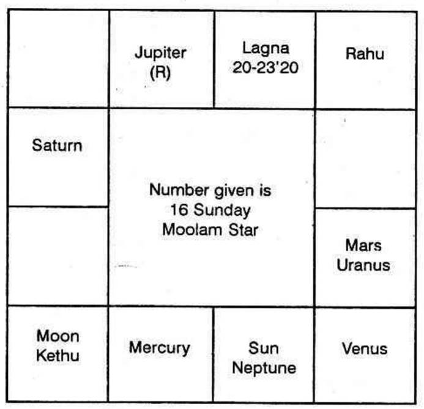

Madras - 4,
5 - 2 - 65.
Dear Sir,
You predicted in your class in Bharatiya Vidya Bhavan, Madras Kendhra on 8 - 11 - 64.
Some of my jewels, silver articles, silk sarees and cash were stolen away from my house during the day time (between 8 - 15 a.m. and 12.30 p.m.)
You took my horoscope and also asked me to give a number within 108. I told you 16.
In the class, you discussed and explained and your students took notes also. You said "your property is intact. All of them will be returned to you. One male and two females are involved in the theft. You will be called to identify the property after 10 - 1 - '65. The thief will be black in complexion. He is a youngman. He will be caught by the police when he makes similar attempts. Be cheerful and thank God that you are lucky to have them back. I suggest you to have a "Godrej" or "Allwyn" or "Khira" Almirah in your house. Also, let me know in February or March, what happened."
The thief was caught on 20 - 1 - 1965. He is a young man black in colour. He is an ex - convict. Two women were also involved. He is a dangerous K.D.
Except 3 articles worth about 3 sovereigns, all the gold jewels, all silk sarees and all silver vessels etc., were recovered from him.
Articles worth about 6 sovereigns were melted away by him and he made two pairs of bangles.
I am glad to say that the thief was convicted and sentenced to rigorous imprisonment for four years. The stolen property worth Rs. 3,000 was handed over to me.
I place on record my deep and sincere appreciation of your correct prediction about the stolen property.
I thank you immensely because your uncanny prediction, boldly declared in the presence of nearly 60 students, in such a detail, gave me and my wife sufficient strength to withstand the shock when we were worried about the loss of property and with that mental strength due to the faith in your prediction, we were able to wait calmly till the thief was caught.
Yours faithfully,
(Sd) S. GOVINDAN
On 8 - 11 - '64, the map of the heavens was as follows.

Bhavas
1. Rahu
2. ____
3. Mars
4. Uranus, Venus
5. ____
6. Sun, Neptune, Mercury
7. Moon, Ketu
8. ____
9. Saturn
10. ____
11. ____
12. Jupiter - Retrograde.
The number given was 16. Therefore divide 16 by 9. Quotient is 1. Remainder is 7. Therefore 1st sign Aries is over: The 7th pada in Taurus is the Lagna.
Because, the Zodiac is 360°. It is divided by 12 spokes. Therefore each arc is 30° in longitude. They are called Rasi: sign or solar mansion. The same Zodiac is divided into 27 equal parts; each is 13°20'; each is called an asterism, star, constellation or Nakshathra. Each star is divided into 4 equal parts and each part called pada or quarter will be 3°20'. Hence the Zodiac is divided into 108 equal parts. And, the number mentioned by the querist is that pada counted from Aries 0° or Mesha 0° or Aswini Nakshathra, first pada. Hence No. 16 is to be divided by 4 (four padas in each star): 16 can be divided by 4 times and the remainder will be Zero, i.e., 4 full Stars, i.e., Aswini, Bharani, Karthika and Rohini. A doubt arises whether to take Rohini 4th pada or Mrigasira first quarter. As 16th part of the 108 divisions is to be taken, take Rohini 4th quarter.
One should divide the number given by the querist, in such a way, that there is some remainder, either 1 or 2 or 3 or 4. So 16 is to be divided by 4 only thrice and should have a remainder of 4.
Therefore number 16 means Rohini 4th pada, i.e. 20° to 23°20' in Taurus. The Navamsa Lagna is Cancer, a movable sign.
Lagna and the aspect to either the ascendant or to the lord of the ascendant indicates whether one can have a favourable answer from the astrologer or not.
Moon and the aspect of Moon indicates the nature of the query, the case of his worry etc.
Taurus rises. Its ruler is Venus. It appears to be debilitated in the rasi but it is exalted in Navamsa. It is 108° away from the ascendant i.e., the aspect from the lord of the Lagna to the Ascendant is favourable. Therefore, first tell the querist that No.16 promises him "Good Luck". This is the duty of the astrologer. Then analyse, think loud, make him understand that you apply the science in full and give your prediction without any doubt. Never use the words “Likely”, “May”, “I think” etc.
Moon is in Sagittarius. No doubt, it is the 8th sign. But it is in Moolam second quarter. So it comes to 7th Bhava or house as the Lagna is between 20° and 23° 20’.
Moon in the 7th house indicates litigation or theft. Moon in Ketu’s Star Moolam and in conjunction with Ketu shows that the querist is confused and is very much worried.
As the querist has already informed that he had lost his property, it is for the astrologer to find out (a) whether the person will have the property back or not, (b) the description of the thief or thieves and (c) the time when he can recover the stolen property.
One’s possessions are indicated by the 2nd, 4th and 11th houses. Second house shows the movable property, the 4th house signifies the immovable property, and the 11th house denotes one’s profit and savings. Lord of 2 Mercury should indicate his readily cashable possessions and other movable properties. As the node Rahu is in Gemini (though in Lagna Bhava) Rahu, automatically becomes the agent of Mercury. Hence Rahu indicates his movable property.
Sun, the lord of the 4th house, is in 6. 6th house is 12th to 7th. Hence it indicates loss to the thief: at least no gains, no benefit to the thief by Sun who denotes permanent possession. Actually the person has not lost any property-land or building.
11th house is Pisces. No planet is in Pisces. Jupiter rules the sign. It is in the 12th house. So his saving is lost, but it is retrograde. So, the loss is only for a temporary period. If Jupiter would have been in direct motion and if the 11th house is unoccupied, he can never get the lost property. A planet, in direct motion, gives a result and confirms it. A planet, in retrograde, will produce a result which will fall through when it takes direct motion.
Jupiter owns two houses, Sagittarius and Pisces. Rahu or Ketu in either of the two, is stronger than Jupiter, Ketu is in Sagittarius. Therefore Ketu is stronger than Jupiter. It is ever retrograde. It is in the second sign to the seventh Cusp and is in the 7th house (i.e. Lagna of the thief. Ketu who is to represent Jupiter as lord of 2 to the 7th house is in the thief’s Lagna Bhava in retrograde). Hence Ketu indicates that the thief cannot have the property as his own, for ever.
Therefore, the querist will get back the stolen property, without fail. So, declare that the lost ones will surely be recovered.
Similarly consider the 11th house (house of profit) to the thief i.e. 11th to the 7th. Scorpio is the 7th house. Virgo is the 11th to it. Mercury rules that sign. It is in direct motion and is in the 6th Bhava to Taurus – i.e., 12th to the 7th Cusp and 7th house. Therefore Mercury threatens that he cannot have them for ever.
The description of the thief or thieves is judged from the seventh house. Scorpio is the seventh house. Its ruler is Mars. According to the Hindus, Mars aspects Scorpio. Hence Mars, a masculine planet owning the seventh house, strong in triplicity, aspecting the seventh house indicates that the thief is a male, a young man and a bold culprit. Mars aspected by Saturn, occupying Leo suggests that he will be dark in complexion.
The seventh Bhava is occupied by Moon and Ketu. Rahu and Ketu will give first, the result of the planets with which they are conjoined and then only the results of the lord of the sign. As Moon is feminine, Moon and Ketu indicate two ladies. Ketu which is to indicate the results of Jupiter who owns the second house to the seventh, has actually done his work. Because, the fact is that the two women were involved in disposing a portion of the property (second house is to make money; convert into cash etc.)
Therefore a young blackman and two other ladies should be the culprits.
When can he have the property?
To regain what one has lost is a fortune. Such fortunate results can be given only by the lord of the 11th house. The eleventh house is owned by Jupiter. So he must gain strength so that the person can have his property. At the time of query, it was retrograde. So, he cannot have them, during the period of Jupiter’s retrograde motion. Jupiter becomes stationary and takes direct motion on 10th January 1965. Therefore, you cannot have it before 10 - 1 - '65, so, do not worry at all. Wait. After 10 - 1 - '65, you must have it.
According to Krishnamurti Padhdhati Jupiter should transit in the star of the lord of the 12th house to the 7th i.e., 6th house and the sub of the second or 11th house. Jupiter, after direct motion, can transit only in the star of Venus (lord of the 12th house to the seventh) and in the sub of Mercury in Bharani star. That is, according to Nirayana system Jupiter should transit between 24° and 25° 31’ i.e. between 5th February 1965 and 19th February 1965. Actually you have received them only then.
When Can I Commit theft successfully?
The Conjoined period and Subperiod of the Significators of 2, 6 and 11 and not connected with 5 or 8 or 12, show that one can gain by theft successfully.